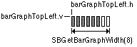
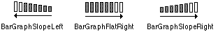

|
|
We discuss Control Strip modules and how to write a new module. This
information originally appeared in the PowerBook 520, 520c, 540, 540c
Developer Note. It is being published as a Technical Note for ease of
access. The information in the PowerBook 520, 520c, 540, 540c Developer
Note is obsolete. All future updates to this documentation will happen
within this Technical Note.
July 01 1994
|
Introduction
Topics
- Adding a Control Strip
- Module Interface
- Module Reentrancy
- Control Strip Module Reference
- Utility Routines
- Gestalt Selectors
The Control Strip is a control panel that provides the operating environment
for Control Strip modules. It runs on any Macintosh PowerBook computer with
System 7.0 or later.
The Control Strip is implemented in a private layer that appears in front of
the windows in all the application layers so that the windows will not obscure
it. The user can move the window for the Control Strip to any location on the
display as long as the right or left edge of the strip is anchored to the right
or left edge of the display. Figure 1 shows a Control Strip fully opened, with
some imaginary modules added.
Figure 1. Control Strip, opened
The Control Strip has a tab on its unanchored end. The user can drag the tab to
adjust the length of the strip or hold down the Option key and drag the tab to
move the strip to a new position. The user can reduce the Control Strip to just
display the tab alone, by clicking the tab. Clicking the tab when the Control
Strip is hidden makes the Control Strip visible again.
The different parts of the Control Strip either display status information or
act as buttons. When the user clicks a button, it is highlighted; some buttons
also display additional elements such as pop-up menus.
By holding down the Option key and clicking a display area, the user can drag
the display area to another position in the Control Strip.
The Control Strip software provides a standard screen location for a collection
of individual modules that provide status and control functions.
The Control Strip is implemented in software as a shell with individual control
and status modules added. The Control Strip software draws the strip that acts
as the background for the individual modules. Each module is responsible for
drawing the icons and other objects that make up its user interface.
The only required resource in a module file is a resource containing the code
necessary for the module to interact with the Control Strip. A module file may
contain more than one code resource if it is to provide support for more than
one function. In that case, each module in the file is loaded and initialized
separately and treated as an independent entity.
If a file contains only a single code resource, the resource may be unnamed,
and the module will be referenced by its filename. If more than one module is
contained within a module file, each module is required to have a unique name
describing its functionality.
All other resources in a module file are optional, but there are several that
are recommended in order to support a custom icon and version information. The
recommended resources are:
'BNDL''FREF''ICN#', 'icl4', 'icl8', 'ics#', 'ics4', 'ics8'- signature resource (same type as file's creator)
- 'vers', ID=1
Developers should confine their resources to the range 256-32767.
The module's interface to the Control Strip consists of a code resource of type
'sdev'. This code is responsible for performing all of the functions
required by the Control Strip (see below) as well as any functions that are
custom to the module itself. The module's entry point is at the beginning of
the resource and is defined as
pascal long ControlStripModule(long message,
long params,
Rect *statusRect,
GrafPtr statusPort);
|
Interactions between a module and the Control Strip are managed by passing messages
to the module to tell it what to do or to obtain information about the module and its
capabilities. Each module is required to observe Pascal register saving conventions.
A module may trash registers D0, D1, D2, A0, and
A1, but must preserve all other registers across its call.
message A message number, from the list in the section "Control Strip
Module Messages", that tells the module what action to perform.
params The result returned by the initialize call to the module. This
would typically be the handle to the module's private variables. It will be
passed to the module on all subsequent calls. (Control Strip modules are code
resources, so they need to use the techniques described in Technote PT 35 -
Stand-Alone Code, ad nauseam in order to use global variables.)
statusRect A pointer to a rectangle defining the area that a module may
draw within.
statusPort A pointer to the Control Strip's graphics port. This will be
either a color or black-and-white graphics port depending on which PowerBook
Model the Control Strip is running on.
The result value returned by the module will vary depending on the message sent to it.
Results for each message are described in the sections on the individual messages.
Any module that makes calls to routines such as GetNextEvent,
ModalDialog or PopUpMenuSelect should assume that it could be
called reentrantly; that is, the module could be called again while the initial
call is still in progress. Situations to avoid are such things as reusing a
single parameter block for multiple calls.
Instead of using a single parameter block, it's better, if possible, to
allocate the parameter block on the stack. In the case of asynchronous calls,
using the stack could cause problems; in that case, preventing the block's
reuse should be sufficient.
If you need to lock and unlock your global variables, it's better to use
HGetState and HLock at the beginning of the call, and HSetState
at the end, so that the state is restored to what it was on entry.
Control strip modules interact with the Control Strip software in three ways:
by accepting messages, by calling utility routines, and by calling Gestalt
selectors. The next three sections describe each of those interactions.
All Control Strip modules must respond to messages from the Control Strip. The
following messages have been defined:
Message name number Description
sdevInitModule 0 Initialize the module
sdevCloseModule 1 Clean up before being closed
sdevFeatures 2 Return the feature bits
sdevGetDisplayWidth 3 Return the width of the module's display
sdevPeriodicTickle 4 Periodically called when nothing else is happening
sdevDrawStatus 5 Update the interface in the Control Strip
sdevMouseClick 6 User has clicked on the module's display area
sdevSaveSettings 7 Save any changed settings in the module's preferences file
sdevShowBalloonHelp 8 Display a help balloon, if the module has one
|
The sdevInitModule message is the first message sent to a module after
the module has been loaded from its file. Initialization allows the module to
initialize its variables and to determine whether it can run on a particular
machine: for example, if the module's function is to display battery
information it can run only on a PowerBook.
The module needs to load and detach any resources in the module's resource file
that will be used, because the resource file will not be kept permanently open.
What that means is that your code can't use GetResource() or the like
to retrieve the handle to one of the module's resources on a subsequent call.
Typically you would allocate space in your global variables for handles to
those detached resources.
The sdevInitModule message returns a result depending on its success
at installing itself. A positive result (>=0) indicates successful
installation. This result value will be passed to the module on all subsequent
calls. A negative result indicates an error condition, and installation of the
module is aborted by the Control Strip software. The module will not receive a
close message when installation has been aborted.
The sdevCloseModule message is sent to a module when it should be
closed. Typically the module itself will decide when this ought to happen.
When the module receives this message, it should dispose of all the detached
resources it loaded as well as its global storage. No result is expected.
The sdevFeatures message queries the module for the features it
supports. It returns as its result a long consisting of 1 bits for supported
features and 0 bits for unsupported features. All undefined bits are reserved
by Apple for future features, and must be set to 0. The bits are defined as:
sdevWantMouseClicks 0 If this bit is set, the Control Strip will
notify the module of mouse down events. If this bit is not set, the Control
Strip assumes that the module only displays status information with no user
interaction.
sdevDontAutoTrack 1 If this bit is set, the Control Strip highlights the
module's display and then calls the module to perform mouse tracking; this bit
is usually set when, for example, a module has a pop-up menu associated with
it. If this bit is cleared, the Control Strip tracks the cursor until the
mouse button is released, then sends an sdevMouseClick message to the
module to notify it that there was a mouse-down event.
sdevHasCustomHelp 2 If this bit is set, the module is responsible for
displaying its own help messages, which can be customized depending on its
current state. If the bit is cleared, the Control Strip will display a generic
help message when the cursor passes over the module's display area and Balloon Help is on.
sdevKeepModuleLocked 3 If this bit is set, the module's code will be kept
locked in the heap. This bit should be set only if the module is passing the
address of one of its routines to the outside world (for example, installing
itself in a queue).
The sdevGetDisplayWidth message is sent to a module to determine how
much horizontal space (in pixels) its display currently requires on the Control Strip.
The module should return the number of pixels as its result. The returned width should not be
the maximum width it requires for any configuration, but should reflect how much space it currently requires,
because it's possible for a module to request that its display be resized.
|
Warning:
You should be conservative in your use of Control Strip display
space, which is limited. Because several modules could be requesting space,
it's possible that your module could be shoved off the end.
|
The sdevPeriodicTickle message is passed to the module periodically to
allow the module to update its display due to changes in its state. You should
not assume any minimum or maximum interval between tickles. The module should
return, as its result, a long that signals requests for actions from the
Control Strip software. All undefined bits in the result are reserved for
future use by Apple and must be set to 0. The bits are defined as:
sdevResizeDisplay 0 If this bit is set, the module needs to resize its
display. The Control Strip will send a sdevGetDisplayWidth message to
the module and followed by a sdevDrawStatus message so that the module
can update its display.
sdevNeedToSave 1 If this bit is set, the module needs to save changed
settings to disk. The Control Strip software will mark the request but may
defer the actual save operation to a better time (for example, when the hard
disk is spinning).
sdevHelpStateChange 2 If this bit is set, the module's state has changed
so it needs to update its help message. If a help balloon is being displayed
for this module, the Control Strip software will remove it and put up a new
help balloon for the current state.
sdevCloseNow 3 If this bit is set, the module is requesting to be closed.
The Control Strip software will call the module to save its settings, then call it again to close itself.
The sdevDrawStatus message indicates that the module has to redraw its
display to reflect the most recent state. This message is typically sent when
the user clicks on the module's display area, when any of the module's
displays is resized, or when the Control Strip itself needs to be updated,
perhaps in response to a screen saver deactivation.
The statusRect parameter points to a rectangle bounding the module's
display area, in local coordinates. All drawing done by a module within the
bounds of the Control Strip must be limited to the module's display rectangle.
The graphics port's clipRgn will be set to the visible portion of
this rectangle so you can draw all the elements in the display. If you need to
change the clipRgn, you should observe the initial clipRgn to
avoid drawing over other items in the Control Strip.
When the user clicks in a module's display area, the Control Strip software
calls the module with the sdevMouseClick message if the
sdevWantMouseClicks bit is set in the module's features.
If the sdevDontAutoTrack bit is also set, the Control Strip draws the
module's display in its highlighted state and then sends the sdevMouseClick message to the module.
If the sdevDontAutoTrack bit is not set, the Control Strip software tracks the cursor until the mouse
button is released. If the cursor is still within the module's display area, the Control Strip software sends the
sdevMouseClick message to notify the module that a click occurred. In either case, the module can then perform
the appropriate function in response to a mouse-down event.
This message returns the same result as the sdevPeriodicTickle message.
The sdevSaveSettings message is passed to the module when the Control
Strip software has determined that it's a good time to save configuration
information to the disk. This message will be sent only if the module had
previously set the sdevNeedToSave bit in the result of a sdevPeriodicTickle or
sdevMouseClick message. The module should return an error code (File Manager, Resource Manager,
or the like) indicating the success of the save operation. The Control Strip software will continue to
send this message to the module until the module returns a result of 0, indicating a successful save.
The Control Strip software calls the module with the sdevShowBalloonHelp message if Balloon Help
is turned on, the module has previously set the sdevHasCustomHelp bit in its features, and the
cursor is over the module's display area. The module should then call the Help Manager to display a help balloon
describing the current state of the module. The module should return a value of 0 if it's successful or an appropriate
error result if not.
The Control Strip software provides a set of utility routines that are
available to Control Strip modules. They are provided to promote a consistent
user interface within the Control Strip and to reduce the amount of duplicated
code that each module would have to include to support common functions.
The utility routines are called through a selector-based trap,
_ControlStripDispatch ($AAF2). If an unimplemented routine
is called, it will return paramErr as the result.
|
Warning:
These routines should not be called at interrupt time because they all move memory.
|
You can use the SBIsControlStripVisible routine to find out whether the Control Strip is visible.
pascal Boolean SBIsControlStripVisible();
|
The SBIsControlStripVisible routine returns a Boolean value
indicating whether or not the Control Strip is currently visible. It returns a
value of true if the Control Strip is visible, or a value of false if it's
hidden.
It is possible for this call to return a value of true even when the Control
Strip is not visible. That happens whenever the Control Strip is not accessible
in the current environment. As soon as that condition changes, the Control
Strip becomes visible again and the returned value correctly reflects the
actual state.
You can use the SBShowHideControlStrip routine to show or hide the
Control Strip.
pascal void SBShowHideControlStrip(Boolean showIt);
|
The SBShowHideControlStrip routine determines the visibility state for
the Control Strip based on the value of the showIt parameter. Passing
a value of true makes the Control Strip visible, and passing a value of false
hides it. Modules shouldn't typically need to call this routine, but it's
provided as a means for other software to hide the Control Strip when it might
get in the way.
Calling SBShowHideControlStrip with a showIt value of true
may or may not show the Control Strip, depending on the current environment: if
the Control Strip is not accessible, it does not become visible. If a
showIt value of true is passed to this routine, then when the
environment changes, the Control Strip will become visible.
You can use the SBSafeToAccessStartupDisk routine to find out whether
the internal hard disk is spinning so that your software can determine whether
to make a disk access or postpone it until a time when the disk is already
spinning.
pascal Boolean SBSafeToAccessStartupDisk();
|
The SBSafeToAccessStartupDisk routine returns a Boolean value
of true if the disk is spinning and false if it is not.
You can use the SBOpenModuleResourceFile routine to open a module
resource file.
pascal short SBOpenModuleResourceFile(OSType fileCreator);
|
The SBOpenModuleResourceFile routine opens the resource fork of the
module file whose creator is fileCreator, and returns the file's reference
number as its result. If the file cannot be found or opened,
SBOpenModuleResourceFile returns a result of -1.
SBOpenModuleResourceFile provides a means for a module to load in large or
infrequently used resources that it doesn't usually need, but that it requires
for a particular operation.
You can use the SBLoadPreferences routine to load a resource from a preferences file.
pascal OSErr SBLoadPreferences(ConstStr255Param prefsResourceName,
Handle *preferences);
|
The SBLoadPreferences routine loads a resource containing a module's
configuration information from the Control Strip's preferences file. The
prefsResourceName parameter points to a Pascal string containing the
name of the resource. The preferences parameter points to a variable
that will hold a handle to the resource read from the file. The handle does
not need to be preallocated.
If either prefsResourceName or preferences contains a nil
pointer, SBLoadPreferences does nothing and returns a result of
paramErr. If the resource is successfully loaded, it returns a result
of 0. SBLoadPreferences can also return other Memory Manager and
Resource Manager errors if it fails during some part of the process.
You can use the SBSavePreferences routine to save a resource to a preferences file.
pascal OSErr SBSavePreferences(ConstStr255Param prefsResourceName,
Handle preferences);
|
The SBSavePreferences routine saves a resource containing a module's
configuration information to the Control Strip's preferences file. The
prefsResourceName parameter points to a Pascal string containing the
name of the resource. The preferences parameter contains a handle to a
block of data which will be written to the file.
If either prefsResourceName or preferences has a nil value,
SBSavePreferences does nothing and returns a result of paramErr.
If the resource is successfully saved, SBSavePreferences returns a result of 0.
SBSavePreferences can also return other Memory Manager and Resource Manager errors
if it fails during some part of the process.
You can use the SBGetDetachedIndString routine to get a string from a detached resource.
pascal void SBGetDetachedIndString(StringPtr theString,
Handle stringList,
short whichString);
|
The SBGetDetachedIndString routine is the detached resource version of
GetIndString. The parameter theString points to a Pascal
string; stringList is a handle to a detached 'STR#' resource; and
whichString is the index (1-n) into the array of Pascal strings
contained in the detached resource. SBGetDetachedIndString will copy
the string whose index is whichString into the space pointed to by
theString. If whichString is out of range, SBGetDetachedIndString
will return a zero-length string.
You can use the SBGetDetachIconSuite routine to set up a detached icon suite.
pascal OSErr SBGetDetachIconSuite(Handle *theIconSuite,
short theResID,
unsigned long selector);
|
The SBGetDetachIconSuite routine creates a new icon suite, loads all
of the requested icons, and then detaches the icons. The parameter
theIconSuite points to the location where the handle to the icon suite
will be stored; the parameter theResID is the resource ID of the icons
that make up the icon suite; and the parameter selector tells which
icons should be loaded into the suite. The selector parameter should
typically contain one (or a combination of) the following values:
svAllLargeData 0x000000FF load large 32-by-32-pixel icons ('ICN#', 'icl4', 'icl8')
svAllSmallData 0x0000FF00 load small 16-by-16-pixel icons ('ics#', 'ics4', 'ics8')
svAllMiniData 0x00FF0000 load mini 12-by-12-pixel icons ('icm#', 'icm4', 'icm8')
|
These values may be OR-ed together to load combinations of icon sizes.
SBGetDetachIconSuite returns an appropriate error code if it's
unsuccessful, or 0 if it was able to load the icon suite. Note that if none of
the icons comprising the icon suite could be found, the call returns the error
resNotFound.
|
Warning:
You should call SBGetDetachIconSuite only when the
module's resource file is open, which is typically the case during a module's
initialization call.
|
You can use the SBTrackpopupMenu routine to manage a pop-up menu.
pascal short SBTrackpopupMenu(const Rect *moduleRect,
MenuHandle theMenu);
|
The SBTrackpopupMenu routine handles setting up and displaying a
pop-up menu associated with a module. The module should pass a pointer to its
display rectangle and a handle to the menu to use. The menu will be displayed
just above or below the module's display rectangle, allowing the user to view
the current configuration or to change the settings. SBTrackpopupMenu
returns which menu item was selected, or 0 if no item was selected because the
user moved the cursor outside the menu's bounds.
|
Warning:
Menus are displayed in the Control Strip's font, so don't use
the CheckItem() routine to mark menu items, because a checkmark is
supported only in the system font. Use the SetItemMark() routine
instead and pass it a bullet (*).
|
You can use the SBTrackSlider routine to display and set an arbitrary
parameter.
pascal short SBTrackSlider(const Rect *moduleRect,
short ticksOnSlider,
short initialValue);
|
The SBTrackSlider routine displays an unlabeled slider above the
module's display rectangle. You can use the slider for displaying and setting
the state of an arbitrary parameter. The parameter moduleRect contains
a pointer to the module's display rectangle; ticksOnSlider is the
upper bounds of the value returned by the slider; and initialValue is
the starting position (0 to ticksOnSlider-1). When the user releases the
mouse button, SBTrackSlider returns the final position.
You can use the SBShowHelpString routine to display a Help balloon.
pascal OSErr SBShowHelpString(const Rect *moduleRect,
StringPtr helpString);
|
The SBShowHelpString routine displays a module's Help balloon. The
module passes a pointer to its display rectangle and a pointer to a Pascal
string, and the routine displays the balloon if possible. If the help string
has a length of 0 or the Help Manager is unable to display a balloon, an error
result is returned. If SBShowHelpString successfully displays the Help
balloon, it returns a result of 0.
You can use the SBGetBarGraphWidth routine to find out the how wide a
bar graph drawn by SBDrawBarGraph (described next) will be so that a
module can calculate its display width.
pascal short SBGetBarGraphWidth(short barCount);
|
The SBGetBarGraphWidth routine returns the width of a bar graph
containing barCount segments. If barCount has a value less
than 0, the SBGetBarGraphWidth routine returns a width of 0.
You can use the SBDrawBarGraph routine to draw a bar graph.
pascal void SBDrawBarGraph(short level,
short barCount,
short direction,
Point barGraphTopLeft);
|
The SBDrawBarGraph routine draws a bar graph containing the number of
segments specified by the barCount parameter in a module's display
area. If the value of barCount is less than or equal to 0,
SBDrawBarGraph does nothing.
The bar graph is drawn relative to the location specified by
barGraphTopLeft.
Figure 2 shows the way the point barGraphTopLeft determines the position of the bar graph.

Figure 2. Positioning a bar graph
The level parameter determines how many segments are highlighted. The
value of level should be in the range of 0 to barCount-1. If
the value of level is less than 0, no segments in the bar graph are
highlighted; if level is greater than or equal to barCount,
all segments in the bar graph are highlighted.
The direction parameter specifies which way the bar graph will be
drawn to show a larger level. It should be one of the following values:
#define BarGraphSlopeLeft -1 // max end of sloping graph is on the left
#define BarGraphFlatRight 0 // max end of flat graph is on the right
#define BarGraphSlopeRight 1 // max end of sloping graph is on the right
|
Figure 3 shows the resulting bar graph for each direction value. The arrows
indicate which way an increasing level value is displayed. For sloped versions
of the bar graph, the number of segments specified by the barCount
value may not be larger than 8. If a larger barCount value is passed,
SBDrawBarGraph draws nothing.

Figure 3. Directions of a bar graph
You should use the SBModalDialogInContext in place of the
ModalDialog routine to keep background applications from getting run
while your modal dialog window is visible.
pascal void SBModalDialogInContext(ModalFilterProcPtr filterProc,
short *itemHit);
|
The SBModalDialogInContext routine is a special version of
ModalDialog that doesn't allow background applications to get time
while a modal dialog window is visible.
The Control Strip software installs two Gestalt selectors to return information
to the outside world. One selector returns software attributes, and the other
returns the software version.
The selector gestaltControlStripAttr ('sdev') returns 32 bits
describing the software attributes of this version of the Control Strip. The
following bits are defined:
gestaltControlStripExists 0 1 = Control Strip is installed
gestaltControlStripVersionFixed 1 1 = Gestalt selector has been fixed
|
The gestaltControlStripVersionFixed indicates that the correct Gestalt
selector has been implemented for the Control Strip. An early version of Control Strip software
used an incorrect Gestalt selector (it was incorrectly using 'sdvr', which conflicted with a PowerTalk selector.)
The selector gestaltControlStripVersion ('csvr') returns the version
of Control Strip software that is installed. The format of the returned
version is the same as that of the numeric part of a 'vers' resource, that is:
Bits 31-24 Major part of the version, in BCD
Bits 23-20 Minor part of the version, in BCD
Bits 19-16 Bug release version, in BCD
Bits 15- 8 Release stage:
$80=final
$60=beta
$40=alpha
$20=development
Bits 7- 0 Revision level of nonreleased version, in binary
|
Thus, if the software version were 1.5.3b25, the gestaltControlStripVersion selector would return $01536019.
Back to top
References
Technical Note PT 35 - Stand-Alone Code, ad nauseam
Back to top
Downloadables
|

|
Acrobat version of this Note (108K).
|
Download
|
|